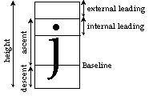

Font.Sizes (fontID : int, var height, ascent, descent, internalLeading : int)
Font.Sizes is used to get the metrics of a particular font. The various parts of the metric are illustrated below. Note that you can calculate the external leading by subtracting the ascent and descent from the height.

If Font.Sizes is passed an invalid font ID, a fatal error occurs. If the Font.Sizes call fails for other (non-fatal) reasons, the metrics for the default font will be returned. As well, Error.Last will return a non-zero value indicating the reason for the failure. Error.LastMsg will return a string which contains the textual version of the error.
The program gets information about 24pt Bold Italic Palatino.
var fontID, height, ascent, descent, internalLeading, : int
var externalLeading: int
fontID := Font.New ("Palatino:24:bold,italic")
Font.Sizes (fontID, height, ascent, descent, internalLeading)
externalLeading := height ascent descent
put "The height of the font is ", height, " pixels"
put "The ascent of the font is ", ascent, " pixels"
put "The descent of the font is ", descent, " pixels"
put "The internal leading of the font is ", internalLeading, " pixels"
put "The external leading of the font is ", externalLeading, " pixels"
Font.Free (fontID)
Exported qualified. This means that you can only call the function by calling Font.Sizes, not by calling Sizes.